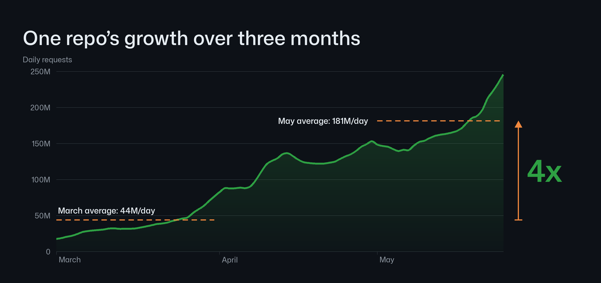
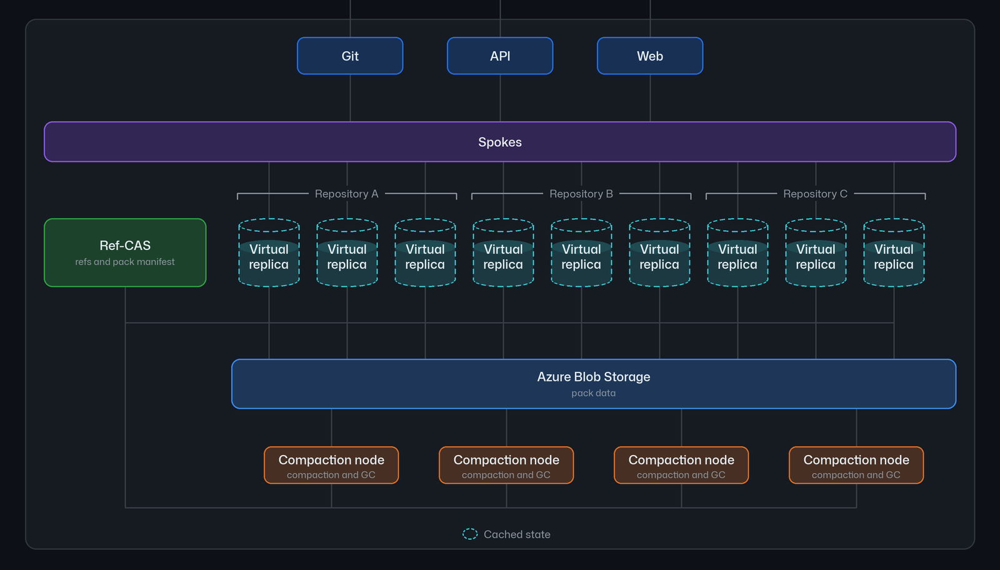
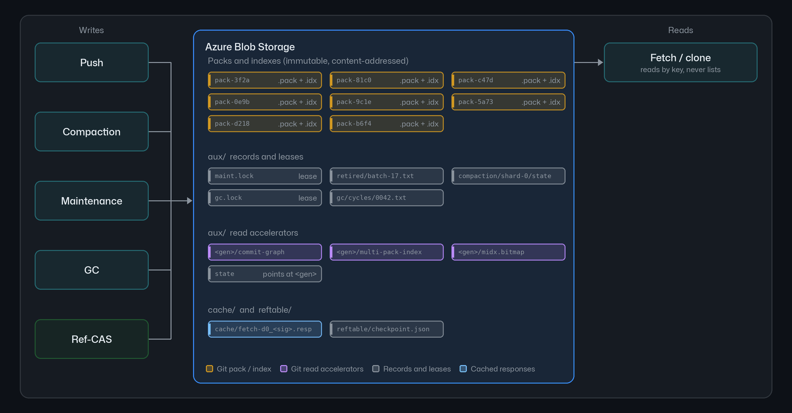

原文：GitHub Engineering《Inside GitHub's new Git storage architecture》（Karthik Raman & Brian Celenza，2026-11-05）
原文链接：https://github.blog/engineering/architecture-optimization/inside-githubs-new-git-storage-architecture/
本文依据原文全文与其三张官方架构图。

一、先说清楚：它要解决的是 agent 带来的写入形态变化
GitHub 在 2026 年 11 月 5 日发布了新的 Git 存储架构，项目代号 「Rubicon」 —— 名字取的是「agentic development 让行业跨过的不归点」。
这不是一次常规的架构优化。 原文对问题的描述很直接：
今天 GitHub.com 上最繁忙的仓库，每秒最多也就几十次写入，而且通常是短促的爆发。随着这些工作转向并行、全天运行的 agent，我们预计这些爆发在明年内会变成持续速率。
而每一次 push 都会带来更多的读：CI 要跑、部署系统要拉取新提交、其它 agent 还要 fetch 上下文 —— 这个读放大效应会随写入一起增长。
原文给了一个具体数字：某个仓库 2026 年 3 月到 5 月，日请求量从平均 4400 万/天涨到 1.81 亿/天，大约 4 倍。

而他们的目标不是「应对下一次增量」，而是「至少两个数量级」的规模。
为此，架构需要满足的条件
原文列出的需求，读完之后能看出整个设计的取舍：
| 需求 | 背后的原因 |
|---|---|
| 接受每秒数千次写入 | 目标本身就是两个数量级 |
| 支持多个写入节点 | 「索引传入的 pack 和检查对象连通性是写入中最耗 CPU 的部分，而这个开销随写入大小增长，单节点很快会变成算力瓶颈」 |
| 最小化提交延迟 | 「agent 在每次 push 后都要等待，才能进入下一步」 |
| 按引用记录变更顺序，并能跨引用快速线性化 | 落后的虚拟副本需要只下载它服务该请求所需的数据来追平 |
| 没变化时保持读便宜 | 「考虑到读写比，这是常见情况」 |
| 每个组件独立扩展 | —— |
其中第三条是最能改变架构设计的。 「agent 在每次 push 后都要等待」—— 这意味着提交延迟不只是个性能指标，它是 agent 工作流的串行瓶颈。
两个扩展轴
原文把规模拆成两个轴，这个划分很重要：
- 水平扩展：多少开发者和 agent 能在多个仓库上工作。GitHub 现有的很多做法（租户分区、隔离与公平性、负载感知路由）都被沿用下来。
- 垂直扩展：多少开发者和 agent 能在一个仓库上工作。「大多数需求都来自这个轴。」
这个划分解释了为什么这次要动存储层而不是加机器。 水平扩展的答案是「多开几个 Spoke」，而垂直扩展的答案是「一个仓库内部的写入路径不能有全局瓶颈」—— 后者只能靠改架构解决。
二、核心洞察：一次 push 里真正需要一致的，只有引用
这是整套架构的支点，原文讲得非常干净：
Git objects are immutable and named by their contents, meaning two writers can store them at the same time without agreeing on anything. The part of a push that needs agreement is the reference update, and a reference update is tiny in comparison.
（这两句是全文的支点 —— 它把「什么需要共识」这个问题缩小到了一个极小的范围。 后面所有设计都是这一句的推论：对象数据不需要协调 → 交给对象存储；引用需要协调 → 单独用 Ref-CAS 处理。这是全文我唯一想原样保留的英文。）
（这两句是全文的支点 —— 它把「什么需要共识」这个问题缩小到了一个极小的范围。 后面所有设计都是这一句的推论：对象数据不需要协调 → 交给对象存储；引用需要协调 → 单独用 Ref-CAS 处理。）
这句话把「什么需要共识」这个问题缩小到了一个极小的范围。展开说：
- pack（对象数据）：不可变、按内容寻址、写入后不再变化 → 写入者之间不需要协调
- 引用（refs）：一个仓库的分支、标签指向哪个提交 → 多个写入者会竞争同一个引用
所以整套架构的设计目标就变成了：把需要共识的部分（引用）单独拎出来，用一个专门的、快的、可扩展的机制处理它；其余部分（对象数据）交给完全不需要协调的对象存储。
原文还回顾了前一篇的铺垫（他们称为「桥」）：把 99.99999% 的仓库迁到 Azure、把写仲裁范围收窄到单个引用、基于 Azure Blob Storage 建立虚拟副本。这一篇是那座桥之后的另一半。
三、整体架构：三个组件，两处状态
先看官方的整体架构图 —— 这张图值得对照文字读三遍：

对照着看，几个要点会清楚很多：
Spokes：不变的的部分
「很多东西保持不变」 —— 这是原文的说法：
来自 Git 客户端、API 和 Web UI 的请求仍然到达 Spokes，它仍然负责路由和负载均衡，也仍然提供 GitHub 其余部分读写仓库数据所用的内部 API。Spokes 也仍然扮演放置与均衡服务的角色，维持水平扩展所需的分区、隔离和租户公平性。
但 Spokes 下面的数据平面是新的。
这个划分划得很清楚：控制面（Spokes）不变，数据面全新。
虚拟副本：可抛弃的算力，本地盘只是缓存
Spokes 把每个请求路由到分配给该仓库的一小组虚拟副本中的一个。虚拟副本是一支可抛弃的计算 fleet，用来服务读、写，或两者兼有。虚拟副本的本地盘是一个随时可以重建的缓存。
这三点性质合在一起，构成了整个扩展性的来源：
| 性质 | 含义 |
|---|---|
| 可抛弃 | 副本消失不需要任何数据迁移 —— 数据在 Blob Storage 里 |
| 本地盘是缓存 | 副本之间没有数据一致性要求 |
| 正确性不依赖落到哪个副本 | 「Spokes 尽可能把一个仓库的流量路由到同一批虚拟副本，这让它们的缓存保持温热、延迟保持低，但没有任何正确性依赖于请求落在某个特定虚拟副本上」 |
最后这一句是整个设计里最关键的一句。 它意味着副本可以任意替换、任意增减，而系统始终正确 —— 这正是「垂直扩展」的答案。
一个副本消失时，「该仓库的其它虚拟副本继续服务，替代者随着流量到来填充自己的缓存」。
压实节点：CPU 完全不用来服务请求
当一个仓库变得繁忙，我们会增加更多虚拟副本。同时，一支压实节点 fleet 在后台工作，直接对 Blob Storage 和 Ref-CAS 操作，以合并每个仓库的 pack 并移除不可达对象。
这项工作从不在虚拟副本上运行，意味着它们的 CPU 和内存几乎可以完全专用于服务请求。
这一句是「解耦存储与计算」这条原则最直白的体现。
在旧架构里，压实（compaction）跑在服务流量的同一批副本上，而且每个副本都得跑一遍。现在把它挪到专门的节点上，虚拟副本就变成了纯服务单元。
两处持久状态
原文把持久状态明确分成两处：
| 状态 | 存在哪 | 为什么 |
|---|---|---|
| Git 对象（pack + 辅助读加速数据） | Azure Blob Storage | 「大部分数据写入某个特定的 key 之后就再不变了，这正是它高度适合 Blob Storage 的原因」 |
| 引用 + pack 清单（pack manifest） | Ref-CAS（一个独立的复制日志服务） | 「繁忙仓库的引用是一小块状态，却有很多写入在同时竞争更新它」 |
四、一次写和一次读，各自经过什么
原文把两条路径写得很简洁：
写： > 一个虚拟副本索引传入的 pack 并把它上传到 Blob Storage，然后向 Ref-CAS 提交一个事务，这个事务在清单里列出该 pack 并更新引用。之后，一个压实节点会把这个 pack 与其它 pack 合并，以保持读快速。
读： > 一个虚拟副本用 Ref-CAS 检查它的引用版本，从 Blob Storage 把它需要的 pack 拉进缓存，然后从那里服务这个读。
注意读路径里的「检查版本」这一步 —— 它是第四节要讲的那个优化的核心。
五、Ref-CAS：把共识范围缩到最小的那一步
两个被放弃的方案，和它们失败的原因
这一段是全文我最想讲的部分，因为它把「为什么最后是这个设计」讲透了。
方案一：所有引用一个 WAL blob
我们的第一个方案是给一个仓库的所有引用做一个写前日志，用单个 blob 索引。每次更新都是针对那个 blob 的一次条件写。
它是正确的，读也便宜：虚拟副本问这个 blob 变没变，没变就完事了。但写入就吃力了。
对一个 blob 只能有一个条件写同时在飞，所以即使我们把写入期间到达的每次 push 都批进下一次，这个仓库的写上限也是每个 RTT 一次写。
实际上，这让我们得到了每秒几百次的写吞吐。
这个失败模式很典型：把顺序写变成了全局串行点。
而 Git 的对象数据本来完全不需要串行 —— 把引用和对象放同一个 blob，等于用最不需要协调的部分拖住了最需要协调的部分。
方案二：分段 blob
我们的第二个方案把引用拆到几个分段 blob 上，每个引用哈希到其中一个。写到不同分段引用的写不再互相等待，这抬高了上限。
但一次读现在必须检查每一个分段才知道有没有变化，而它只能和最慢的那个分段一样快。
我们拿写延迟换了读延迟，而读比写多几个数量级。
这一条更值得记。 因为它是一个很容易掉进去的坑：把热点按 key 拆开，是提高写吞吐的标准手法。但如果读必须遍历全部分段，拆分的收益就被读放大效应吃光了。
而 Git 的访问模式恰恰是「读远多于写」 —— 一次 push 会引发 CI、部署、其它 agent 的多次 fetch。
两个方案都失败的原因是同一个：它们都在优化写，而瓶颈在读。
最终方案：专用的复制日志服务
既然两个方案都不满足全部需求，我们就另建了一个：一个专门用于引用的复制日志服务，也就是 Ref-CAS 服务。
它的机制：
Ref-CAS 中的每次引用更新都是一次由仲裁（quorum）提交的 compare-and-swap。一个事务只锁定它触及的引用，检查每一个引用仍然持有写入者期望的值，然后在日志的大多数副本记录之后变为可见。
agent 大多推送到自己的分支，所以大多数更新不产生争用，它们并行复制。当两次 push 确实更新同一个引用时，只有一个会追加到日志。
「只锁定它触及的引用」+「大多数副本记录后可见」 —— 这两句构成了 Ref-CAS 的全部。
而 agent 场景下这个设计的收益是直接的：「agent 大多推送到自己的分支」 —— 意味着争用本来就少，而 Ref-CAS 的细粒度锁让争用进一步减少。
两个值得学的设计细节
① 它只存指针，从不持有或校验对象数据
与旧架构中的共识组不同，Ref-CAS 从不持有或校验对象数据。它只存储指向数据的指针。
虚拟副本在提交引用事务之前就把 push 的 pack 上传到了 Blob Storage。一个引用永远只指向已经持久化的对象。
这个顺序不能反。 「先让数据落地，再让引用指向它」—— 这是一个看起来简单但极其重要的不变量。它保证了任何时刻读到的引用，都不会指向一个可能不存在或可能损坏的对象。
（顺带说，这也是为什么 Ref-CAS 的性能能那么好：它不搬运数据，只搬指针。）
② 读路径上的版本检查 —— 让「没变化」变成一次比较
Ref-CAS 的每次提交都会得到一个日志序列号（LSN），而仓库的版本就是它最新提交的 LSN。读从一次版本检查开始。
虚拟副本发送它已经持有的引用状态版本。如果那个版本仍然是当前的，回复里完全不带任何引用 —— 所以一个没变化的仓库只花一次比较。
如果虚拟副本落后了，它会拿回当前的引用和版本，以及指向 pack 数据和其它需要知道的信息的指针（比如上一次垃圾回收周期是什么时候）。
「一个没变化的仓库只花一次比较」 —— 这是整个架构里最漂亮的一个优化。
因为读写比是几个数量级，而绝大多数读面对的都是没变化的仓库。把这种读的成本从「拉一堆 pack 指针再逐个对比」压到「一次整数比较」，是数量级的差别。
效果
这些方案让我们能够单独以每秒数万次操作的量级对引用状态做事务，并为复制日志上的额外注解提供一个基线。
每秒数万次 —— 对比方案一的「每秒几百次」，这是两个数量级的差别。而这个数字是靠缩小共识范围换来的，不是靠加机器。
六、压实：为什么 pack 数量不能无限增长
写的问题解决了，读和写的性能还得一起维持住 —— 这是二阶问题。
每次 push 都往 Blob Storage 加一个 pack。Git 可以从一个仓库的许多 pack 里服务，但每多一个 pack，查找就略微昂贵一点，所以 pack 数量不能无界增长。
在旧架构里，压实跑在服务流量的同一批副本上，而且必须在每个副本上都跑一遍。
「必须在每个副本上都跑一遍」 —— 这就是耦合的代价。副本越多，重复劳动越多。
新架构下的压实流程
原文描述了一个压实节点处理某个分片的完整步骤：
- 节点先在 Blob Storage 上对该分片取一个租约（lease），所以同一时刻只有一个节点压实这个分片；
- 与此同时，虚拟副本继续上传 pack 并把它们列进 pack 清单；
- 节点读清单找出新 pack，把它们收集进一个开放段（open segment） —— 这实际上是一个「即将被压实的数据的中转站」；
- 当该段达到一个基于 pack 数量、大小或年龄的限定阈值时，就封存（seal）这个段 —— 它不再接受新 pack；
- 然后把它的 pack 合并成更少、更大的 pack；
- 在发布任何东西之前，节点检查新的 pack 包含与输入完全相同的对象；
- 上传新 pack 并加入清单；第二个事务把输入从清单里移除，清理稍后删除它们。
「在发布任何东西之前，节点检查新的 pack 包含与输入完全相同的对象」 这一步是安全关键 —— 压实是删除性的操作，如果合并过程丢对象，就等于丢数据。
而「封存」这个机制让压实和摄入可以并行：压实进行中，该分片的下一个段已经开始收集输入包。
分片与分层
为了横向扩展，这个过程对许多分片同时独立运行。每个 pack 的哈希映射到一个分片，所以增加分片和节点就增加了压实吞吐。
一个仍小于尺寸上限的已压实 pack 会按自己的哈希回到某个分片并被再次合并，所以 pack 分层增长直到达到上限。
净效果是在 push 攀升的同时，pack 数量保持基本平坦。
「pack 分层增长直到达到上限」 这个机制挺巧：一个压实后的 pack 如果还小，就按自己的新哈希重新入队，可能落到另一个分片，和那边的 pack 合并。这样小 pack 会像滚雪球一样长大，而不是永远碎片化。
结果是：push 数量上升，pack 数量曲线平坦。 这正是压实要达到的目的。
压实 vs 垃圾回收
原文明确区分了两者：
压实合并 pack，但它保留每一个对象。垃圾回收才是移除没有任何东西再引用的对象的那一步 —— 比如被删除的分支和 force-push 留下的那些。
在新架构里，垃圾回收的工作方式与压实非常相似，用专门的 worker 处理计算密集的部分。它还有一些安全移除数据的特殊行为，值得单独讨论。
这个区分值得强调，因为两者经常被混为一谈：
| 压实（compaction） | 垃圾回收（GC） | |
|---|---|---|
| 做什么 | 合并 pack | 删除无引用对象 |
| 保留对象吗 | 全部保留 | 删除不再被引用的 |
| 危险性 | 低（合并错还能还原） | 高（删错了就是丢数据） |
| 在新架构里 | 专门的压实节点 fleet | 专门的 GC worker |
压实是可逆的，GC 不是。 所以后者需要「专门的安全行为」来保证不会误删 —— 原文说这部分「值得单独讨论」，但本文不展开。
七、Blob Storage 里到底放了什么
原文给了一个完整的清单，这是理解「为什么是对象存储」的关键：
存放在 Azure Blob Storage 里的包括：
- packs 和索引，由 push、压实和垃圾回收写入；
- 各种读加速器（read accelerators）—— 比如多 pack 索引、可达性位图（reachability bitmap）、以及一些自定义格式；
- 让压实和垃圾回收能够恢复或审计其工作的记录，以及压实节点用来认领工作的租约；
- 频繁重复 fetch 的缓存响应；
- 仓库引用状态的检查点 —— 「不过不是用来服务请求的权威状态」。
最后那一条有个细节值得注意：检查点存在 Blob Storage，但权威状态在 Ref-CAS。 也就是说 Blob Storage 存的是「可以重建的东西」，Ref-CAS 存的是「必须一致的真相」。
而 GitHub 之前的两篇文章里提到过「把 99.99999% 的仓库迁到 Azure」—— 也就是说仓库的数据副本已经在 Azure 上了，这一篇讲的是怎么让 Git 的操作语义适配对象存储。

这张图里有一个细节比其它都重要：读是「by key, never lists」。
回忆第二节那个洞察 —— 对象不可变、按内容命名，所以读不需要「查找」，只需要「按 key 取」。「never lists」这四个字是整个架构能跑在对象存储上的技术前提。
八、接下来的三块工作
原文列出了三个方向，我把它们和前面的架构对应起来看：
架构本身的进一步优化
| 优化 | 做什么 |
|---|---|
| 只读所需 | 「从 Blob Storage 取单个对象，而不是取包含它的整个 pack」 |
| 按类型组织 pack | 「把 commit、tree 和 blob 分到各自的 pack 里，这样很多请求触及的数据更少」 |
| 部分副本 | 「不需要每个 pack 都在本地盘上就能服务请求」 |
| 物化视图 | 「把仓库数据保持成可直接使用的形式，比如预先生成的归档、默认分支的近实时浅拷贝、以及与每个 commit 一起存储的 agent 会话上下文」 |
| 全局副本 | 「把副本放在任意区域，靠近使用它们的工作负载。读保持在最新写入的有界陈旧度内」 |
| 缩容到零 | 「让 fleet 随实际活跃的仓库增长和收缩」 |
其中「物化视图」里的「agent 会话上下文与每个 commit 一起存储」最值得注意 —— 这说明 GitHub 已经在把「agent 需要什么」当成一等公民来设计存储布局了，而不只是把 agent 当成「更多的写入者」。
让 agent 操作更省
- 不用 clone 就能干活：「很多 agent 任务从不需要完整工作树。它们需要几个文件和足够的上下文来做一个改动。它们可以直接从服务器读取两者。」
- 原子 commit API：「一次操作落地一个多文件改动。整个改动要么提交，要么在冲突时被干净地拒绝。」
- 事件流：「一个通用事件流让它们订阅变更并即时反应。」
「不用 clone 就能干活」这条对 agent 生态的意义可能比存储架构本身还大 —— 因为 agent 场景下 clone 整个仓库是最大的浪费。
改进 Git 本身
- 轻量 clone：partial clone、shallow clone、sparse checkout 各自让 agent 少取数据，但每个都有缺口，彼此之间也不总是能配合；
- 移除隐藏的扩展成本：「Git 仍然有一些代码路径，其慢速增长比仓库增长快得多」；
- 更快的历史遍历：「像 commit-graph 这样的元数据可以回答 merge-base 和可达性问题，而不必遍历每个 commit。当一个 agent 的 API 调用在服务端变成 Git 工作时，这最为重要。」
- 避免常见坑：「agent 会犯开发者常犯的同样错误。Git 可以捕捉更多常见错误并在造成破坏前警告。」
九、几个我觉得值得单独记的点
① 「6000 个 agent 在一个仓库上」这个数字的分量
原文给的内部测试数据是：支持 5000 个并发 agent 在一个仓库上工作，每秒向一个仓库发送 7200 次 push，同时以持续的低延迟服务读流量。
而今天 GitHub 最繁忙的仓库是「每秒几十次写入」。 所以目标不是「比现在快一点」，而是每天都在涨的那个仓库，会在明年变成现在的几百倍。
从这个角度看，「每秒数千次写入」不是终点，而是一个必须先跨过的门槛。
② 这套架构的哲学：把「需要一致的部分」缩到最小
回头看，Rubicon 的设计可以浓缩成一句话：尽可能多地让数据「不需要一致」，然后把不得不要一致的部分（引用）单独处理。
- 对象不可变、按内容寻址 → 写入者之间不需要协调
- 引用很小、且大部分更新不争用（agent 推自己的分支）→ 共识范围小到可以每秒做数万次
- 本地盘只是缓存 → 副本可以任意增减，正确性不受影响
- 压实挪到专门的节点 → 服务节点的 CPU 全部用于服务请求
这四条叠起来，才有了「垂直扩展」这个答案。
③ 三个组件的分工，和 Git 原本的对应关系
| 新组件 | Git 原本的对应物 | 变化 |
|---|---|---|
| Spokes | GitHub 的 Git 路由层 | 基本不变 |
| 虚拟副本 | 每个仓库的 Git 副本 | 从「有状态」变成「可抛弃的缓存」 |
| Ref-CAS | 旧架构里的共识组 | 从「持有并校验对象数据」变成「只存指针」 |
| 压实节点 | 跑在服务副本上的压实 | 从「每个副本都跑」变成「专门的 fleet」 |
最有意思的是 Ref-CAS 的定位变化：旧架构里确实有一个共识组（原文前面那篇文章提到过「我们说过还在栈里的某个地方」），它现在被收缩成了一个专职的、更细粒度的组件。
④ 落地状态：有限私有预览
原文最后说：
它目前处于有限私有预览状态，明年初会有更广泛的推广。
所以现在能看到的只有架构描述和压测数字，实际效果还没经过公开检验。 这是阅读这类官方架构博客时该有的基本判断。
Sources
- GitHub Engineering, Inside GitHub's new Git storage architecture（Karthik Raman & Brian Celenza，2026-11-05）: https://github.blog/engineering/architecture-optimization/inside-githubs-new-git-storage-architecture/
- 原文配图（本文已抓取并随文发布）：
customer-growth.png、request-flow.png、blob-contents.png
事实边界说明
- 架构组件、机制描述、两个被放弃的方案及其失败原因、Ref-CAS 的两条设计细节、压实流程、Blob Storage 内容清单、后续三块工作、落地状态：均引自原文。
- 性能数字（5000 并发 agent、7200 push/秒、3 月 4400 万/天、5 月 1.81 亿/天约 4 倍、方案一每秒几百次、Ref-CAS 每秒数万次）均引自原文；本文未做独立验证。
- 本文的三处解读性判断（架构哲学可浓缩为「把需要一致的部分缩到最小」；「agent 大多推送到自己的分支」是 Ref-CAS 细粒度锁收益的直接来源；「never lists」是跑在对象存储上的技术前提）是基于原文事实的推断，原文未用这些措辞，已在正文相应位置标注。
- 三张架构图版权归 GitHub 所有，此处为技术解读用途引用，附原始来源链接。

点评与讨论
GITHUB 账号登录有疑问、有补充、有不同看法？欢迎留下你的点评，一起把技术聊透。👇